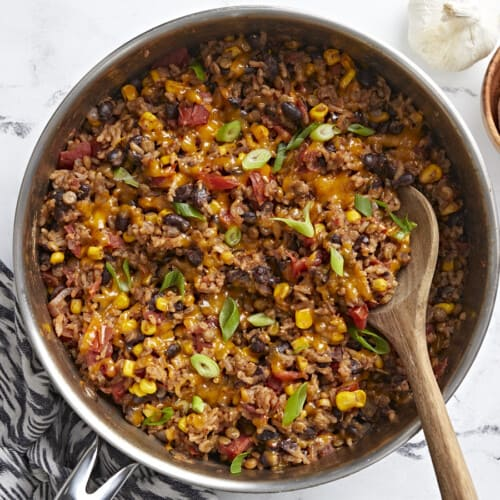

Southwest Lentils and Rice Skillet

Description
This Southwest Lentils and Rice Skillet is packed with veggies and bold
flavors for a super filling, budget-friendly, and easy to make one pot skillet meal!
Ingredients
- 1 Tbsp olive oil
- 1 small red onion
- 2 cloves garlic
- 1.5 tsp cumin
- 1 tsp chili powder
- 1 tsp adobo seasoning
- ½ tsp dried oregano
- ½ tsp salt
- ¼ tsp freshly cracked black pepper
- ½ cup brown lentils, rinsed
- 1 15oz. can black beans, drained & rinsed
- 1 14.5oz. can fire roasted tomatoes
- 1 cup frozen corn
- 2 cups vegetable broth
- ¾ cup long grain white rice, rinsed
- ½ cup shredded cheddar cheese
- 2 green onions, sliced
Steps
-
Dice the red onion and mince the garlic. Add olive oil and onion to a large deep skillet
over medium heat and sauté until onions are translucent, approximately 2-3 minutes. Add
minced garlic and sauté an additional 30 seconds or until garlic is fragrant.
-
Add the cumin, chili powder, adobo, oregano, salt, and pepper to the skillet, stir and
toast spices for about 30 seconds.
-
Next add in the lentils, black beans, fire roasted tomatoes (with juices), corn, and
vegetable broth. Stir everything to combine. Place a lid on the skillet, turn the heat
up to medium-high, and allow the mixture to come to a full boil. Once boiling,
immediately reduce the heat to medium-low and simmer for 5 minutes. This will allow
the lentils to start cooking first before adding the rice.
-
After 5 minutes, remove the lid and add the rice. Stir briefly just to evenly distribute
the rice, cover with a lid, bring the skillet back to a boil, then reduce the heat again
and simmer for 20 minutes.
-
While the mixture is cooking, grate the cheddar cheese and slice the green onions.
-
After 20 minutes, remove the skillet from the heat and let it rest, with the lid on,
for 5 minutes. After it has rested, remove the lid, fluff the rice and gently stir to
redistribute the veggies.
-
Top the lentils and rice mixture with shredded cheese and sliced green onions. Serve
with more of your favorite toppings and enjoy!